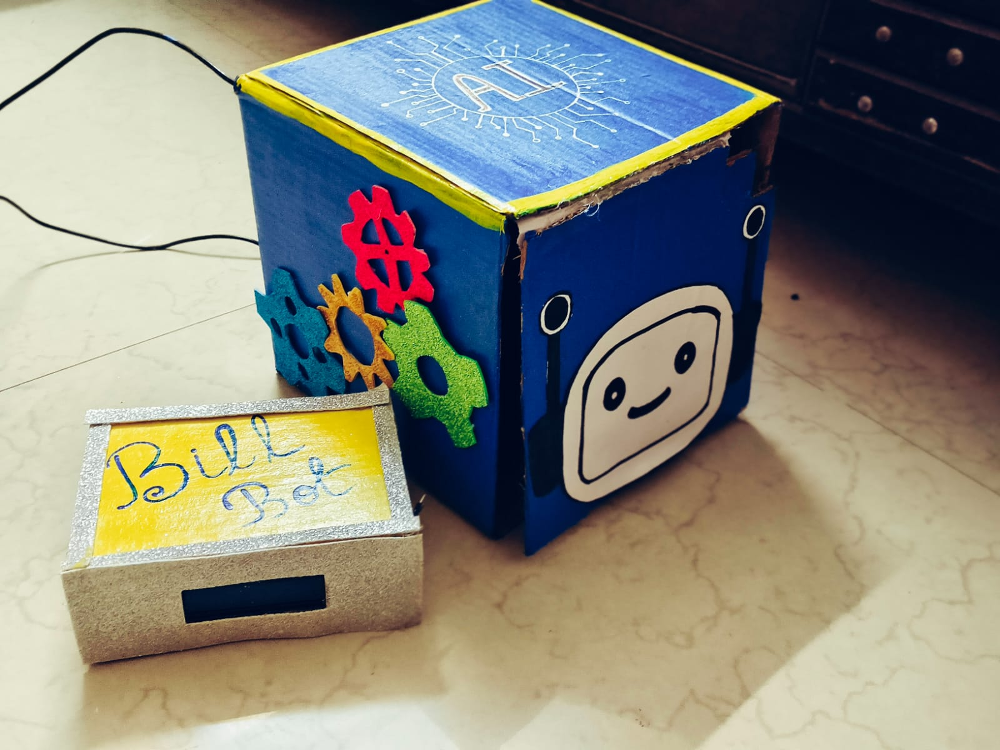
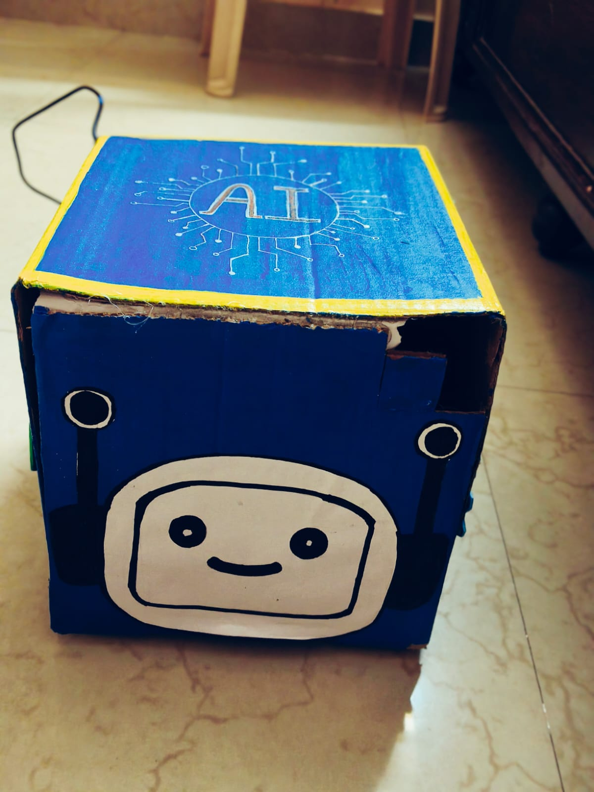
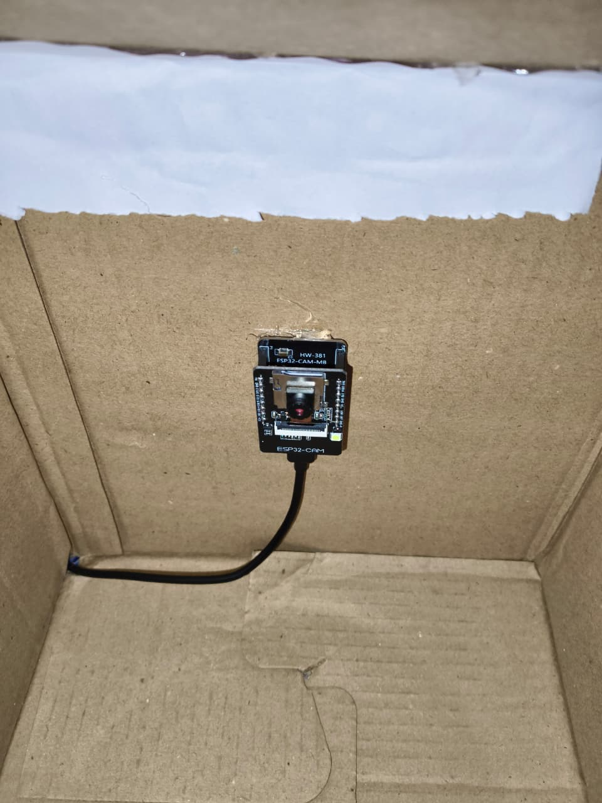
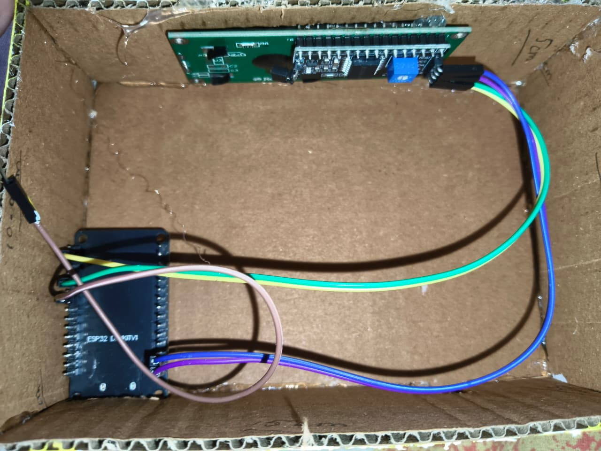
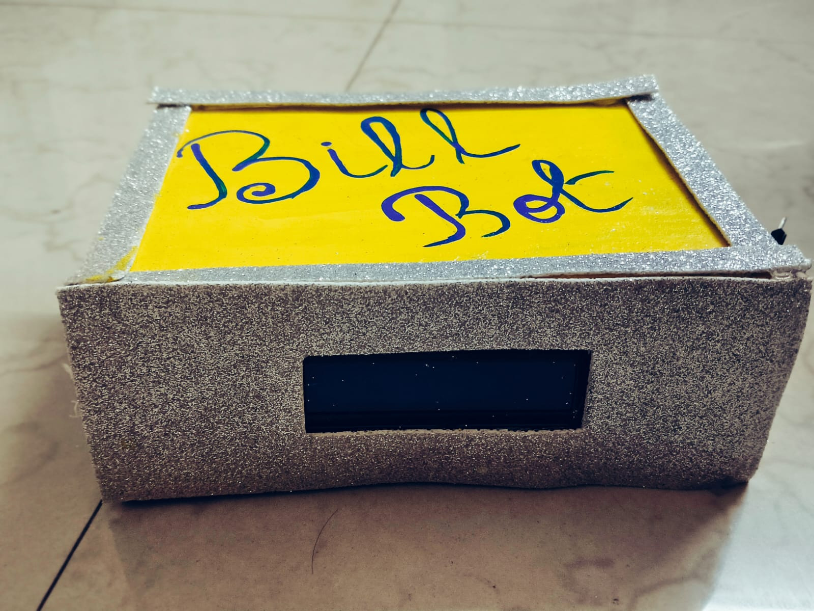
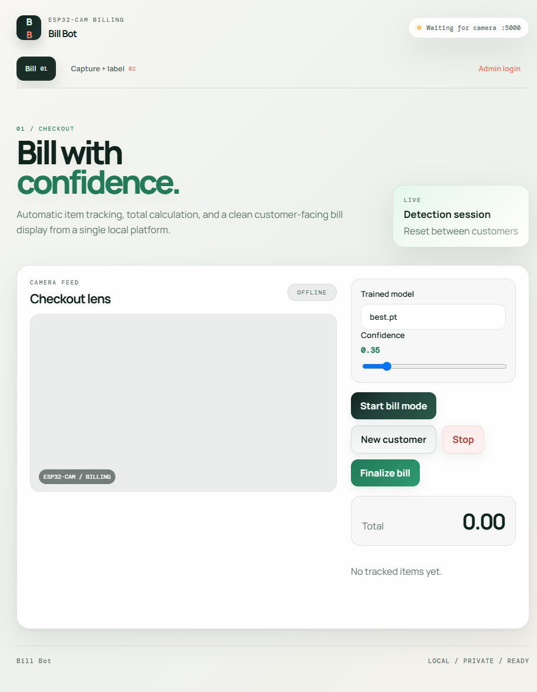

01
Capture
The AI Thinker ESP32-CAM streams images over Wi-Fi. Save varied product views into dataset/raw for labeling.
01 ESP32-CAM / LOCAL AI / AUTO BILLING
A camera sees the products. A trained model tracks them. Bill Bot turns each checkout into a clear, itemized total.

FROM CAMERA FRAME
TO TRACKED PRODUCTS
TO A READY BILL
CLASS 9 / 2026THE BUILD CARD / CAMERA / CONTROL
Bill Bot is a physical prototype, not just a dashboard: a handmade robot enclosure, an inward-facing ESP32-CAM, wired control electronics, and a separate billing-display box.




02 THREE STEPS / ONE CHECKOUT
The project links image collection, model training, object tracking, and a configurable product catalog.
The AI Thinker ESP32-CAM streams images over Wi-Fi. Save varied product views into dataset/raw for labeling.
Draw product boxes, assign catalog classes, then train YOLO with separate training and validation images.
YOLO detections are tracked with ByteTrack, counted once per track ID, and priced from the local catalog.
03 REAL SOFTWARE / NOT A MOCKUP
These are screenshots from the Flask dashboard. The camera feed is offline in the captures because the ESP32-CAM was not connected.

04 HARDWARE MEETS SOFTWARE
Built with the hardware and code already in this repository.
05 WHAT THE PROJECT ACTUALLY DOES
Capture, dataset editing, training, pricing, and checkout are separate tools connected by Flask and the same product catalog.
Connect an ESP32-CAM stream, save frames, and optionally request a first-pass label from the current YOLO model. Review AI labels before using them for training.
Upload images into train or validation splits, filter raw captures, draw and edit boxes on a canvas, save YOLO labels, or delete an image and its paired label together.
Set the dataset YAML, starting model, epochs, and batch size. The script checks the dataset and labels, prepares a validation split when needed, and copies the best weights to best.pt.
Add products and numeric prices. Names are model classes, so spelling and case must match across the catalog, labels, and dataset configuration.
Start or stop detection, tune confidence, reset for a new customer, review quantities and the running total, then finalize a receipt. The standalone program can save snapshots and text receipts.
06 HARDWARE / SOFTWARE / DATA
The camera sends frames; the laptop runs detection and billing. A separate ESP32 DevKit can mirror checkout status on an LCD.
Runs Espressif’s CameraWebServer example and exposes the MJPEG stream used by the Python capture and billing programs.
Runs Python 3.10+, Flask, OpenCV, Ultralytics YOLO, model training, and the browser dashboard on the camera’s local network.
The companion firmware polls Flask every two seconds and alternates between the total and detected quantities. Wiring: SDA to GPIO 21, SCL to GPIO 22, LCD address 0x27.
Flask serves pages and APIs; OpenCV reads and annotates frames; Ultralytics runs detection; ByteTrack maintains object identities between frames.
The root main.cpp and Arduino sketch contain ESP32 display/controller firmware. PlatformIO targets an ESP32 DevKit and installs the LCD and ArduinoJson libraries.
07 CURRENT CONFIGURATION
These are the current entries from prices.json. The source stores numeric values without a currency code, so no currency symbol is assumed.
| MODEL CLASS | PRICE VALUE | SOURCE |
|---|---|---|
| ead buds | 1000.00 | prices.json |
| Pen | 10.00 | prices.json |
| battery | 50.00 | prices.json |
| watch | 600.00 | prices.json |
| pendrive | 400.00 | prices.json |
| sweeingum | 1.00 | prices.json |
Before the next training run: “ead buds” and “sweeingum” may be spelling errors. If corrected, update the price book and labels together so model class IDs stay consistent.
08 RUN IT LOCALLY
The showcase is static; camera streaming, inference, admin tools, and receipts require the Python app running on your computer.
py -m venv .venv
.\.venv\Scripts\Activate.ps1
python -m pip install -r requirements.txtFlash the ESP32-CAM CameraWebServer example for the AI Thinker board. Connect the laptop and camera to the same Wi-Fi network.
Add product names and prices, capture varied views, label bounding boxes in YOLO format, and check that class names match.
python train_model.py --data dataset/data.yaml --epochs 50
python app.py --host 0.0.0.0 --port 5000Open http://127.0.0.1:5000. Set ADHAYAN_ADMIN_PASSWORD in a local .env file to enable local admin login.
python capture_images.py --stream http://ESP32_IP:81/stream
python billing.py --stream http://ESP32_IP:81/stream --model best.ptCapture: s saves a frame and q exits. Billing: c clears, s saves a snapshot, b writes a receipt, and q exits.
09 CURRENT LIMITS / HONEST STATUS
Model file stays local. The trained best.pt, training runs, and private image dataset are not included in this static site.
Tracking can re-count. If a product leaves the camera and returns with a new tracking ID, it can be billed again. Use a fixed tray and reset for each customer.
Camera needs the local app. GitHub Pages can show this guide but cannot connect to the ESP32-CAM or run YOLO inference.
Lid automation is not active. The current controller firmware has placeholder servo functions; its LCD status display is separate from physical lid control.